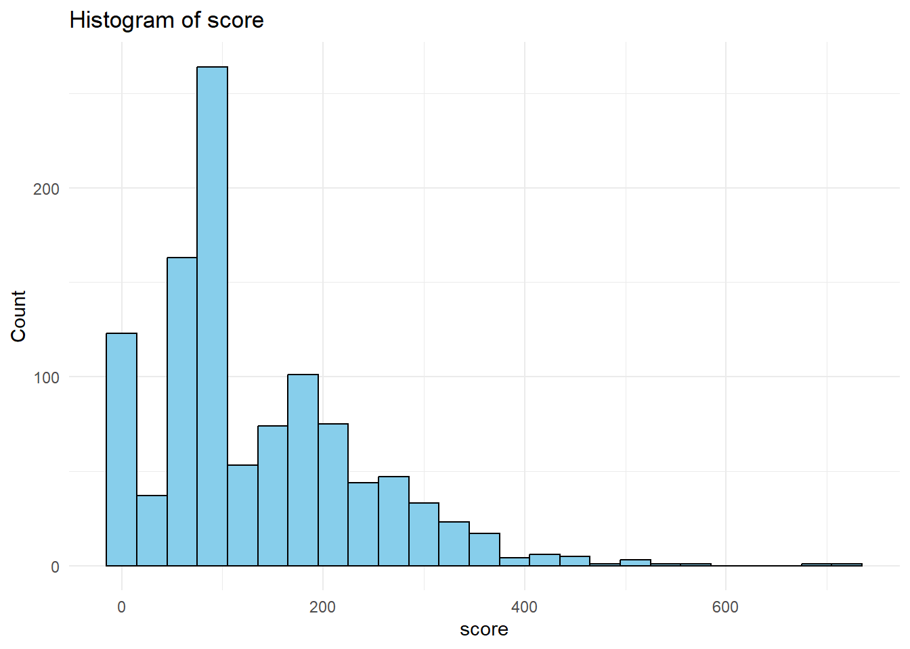
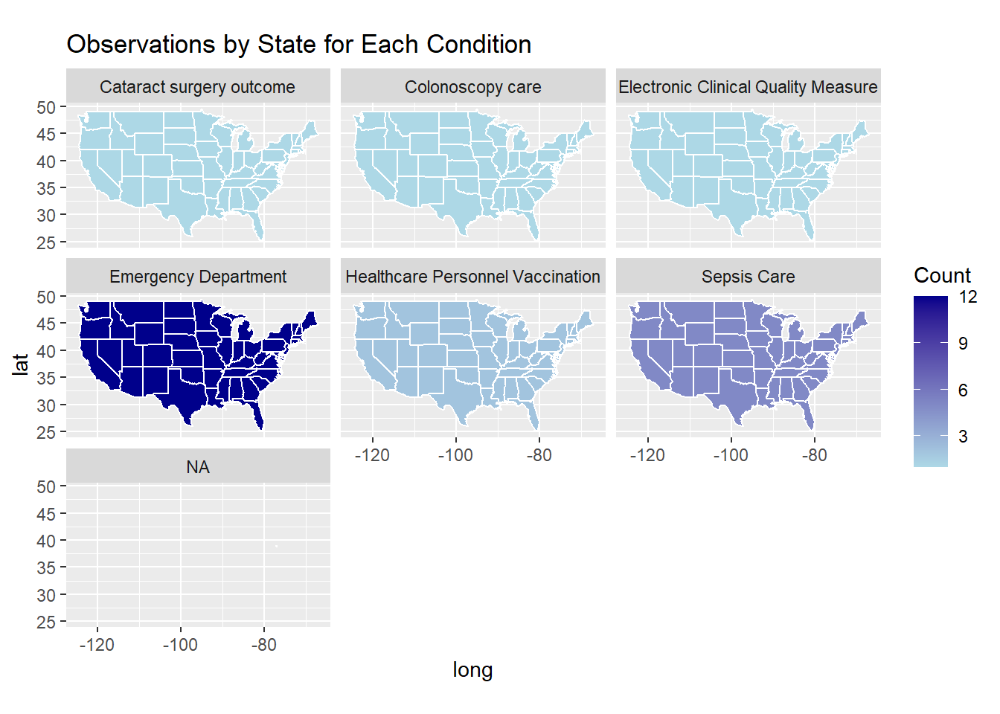
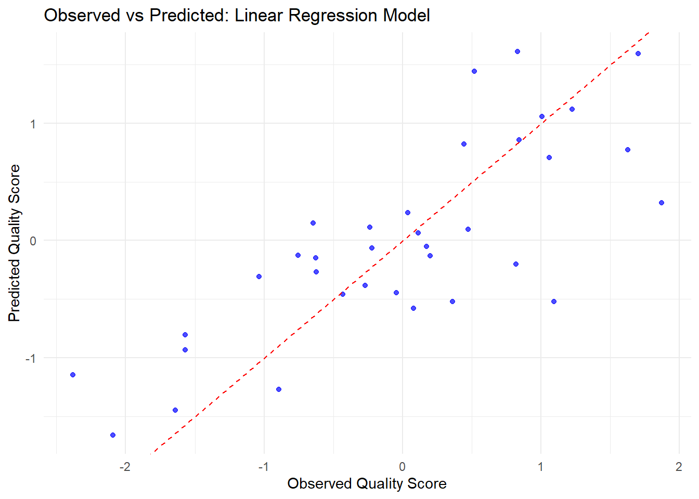
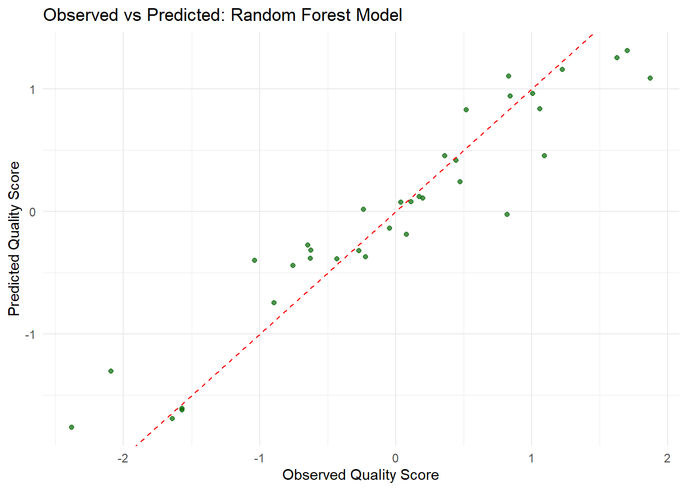
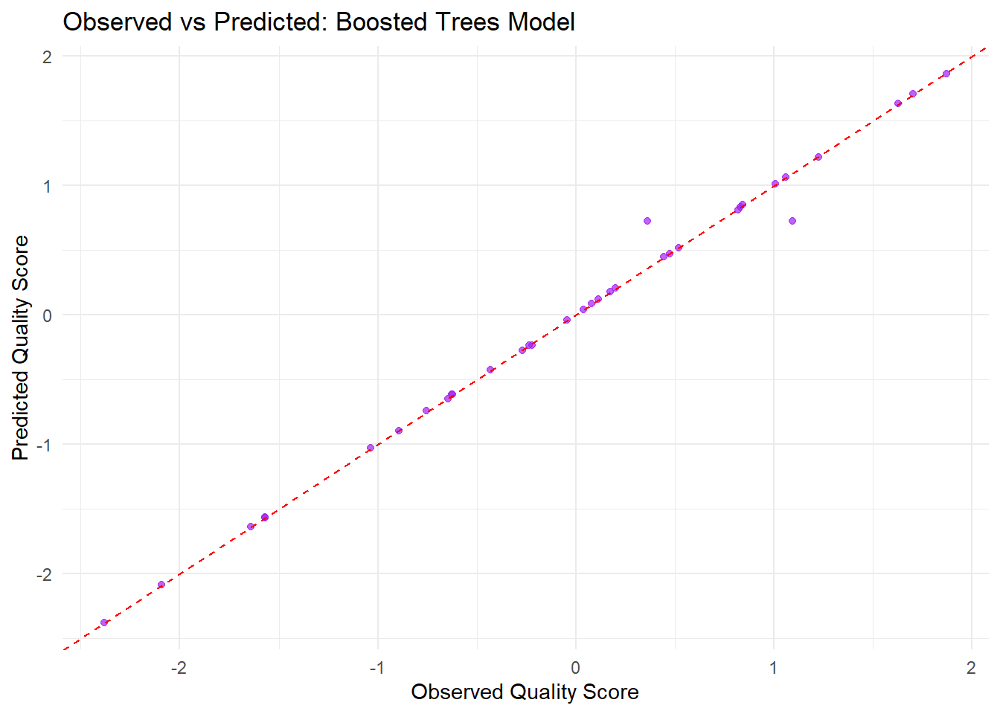
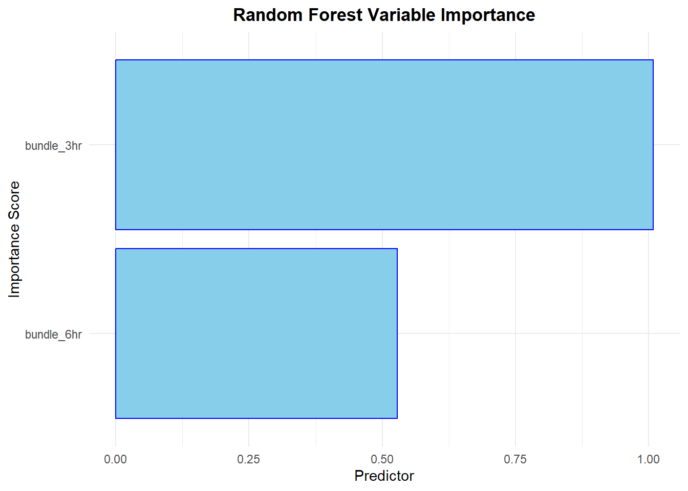
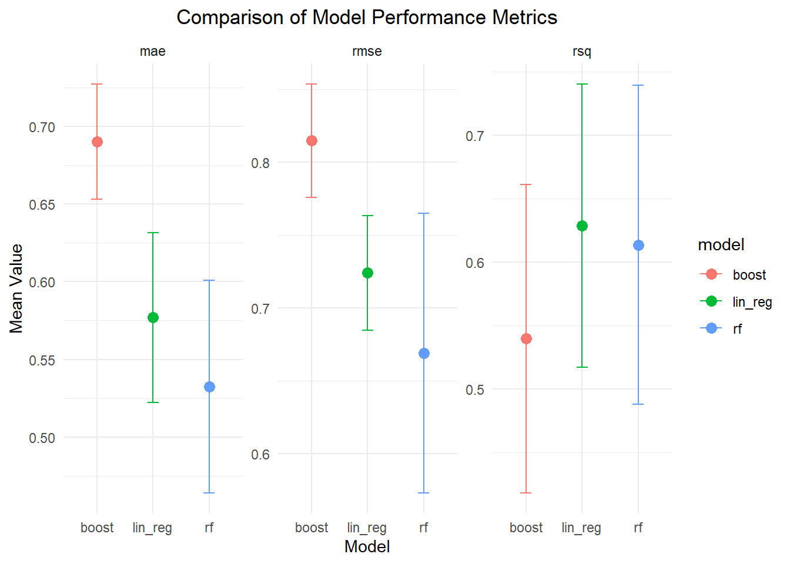
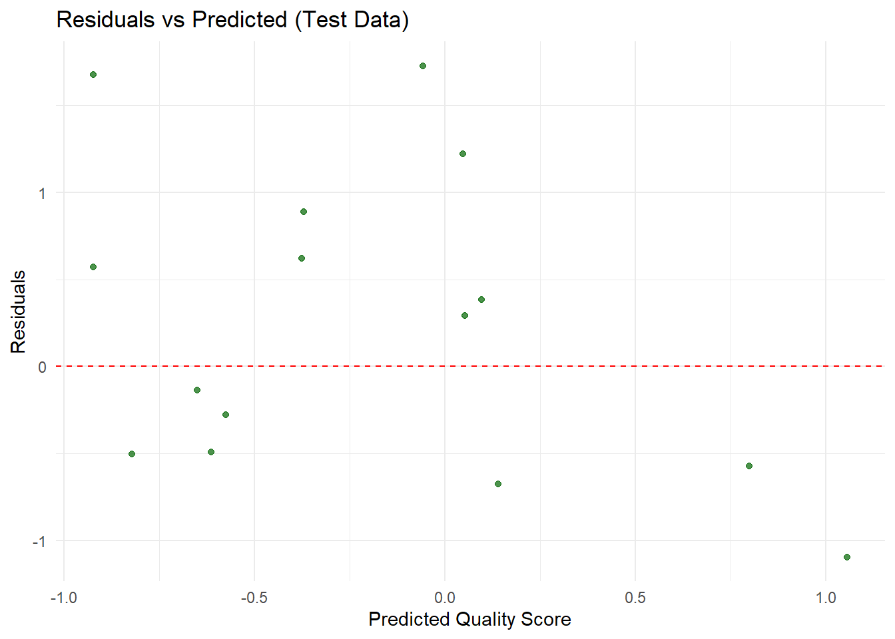

Warning: package 'gt' was built under R version 4.4.2
Part 1: Importing & Reading the Dataset
# Defining the raw URL for the CSV fileraw_url <-"https://raw.githubusercontent.com/rfordatascience/tidytuesday/main/data/2025/2025-04-08/care_state.csv"# Read the CSV file directly from the URLcare_state <-read_csv(raw_url)
Rows: 1232 Columns: 8
── Column specification ────────────────────────────────────────────────────────
Delimiter: ","
chr (5): state, condition, measure_id, measure_name, footnote
dbl (1): score
date (2): start_date, end_date
ℹ Use `spec()` to retrieve the full column specification for this data.
ℹ Specify the column types or set `show_col_types = FALSE` to quiet this message.
# Display the first few rows of the datahead(care_state)
# A tibble: 6 × 8
state condition measure_id measure_name score footnote start_date end_date
<chr> <chr> <chr> <chr> <dbl> <chr> <date> <date>
1 AK Healthcare… HCP_COVID… Percentage … 7.3 <NA> 2024-01-01 2024-03-31
2 AK Healthcare… IMM_3 Healthcare … 80 <NA> 2023-10-01 2024-03-31
3 AK Emergency … OP_18b Average (me… 140 25, 26 2023-04-01 2024-03-31
4 AK Emergency … OP_18b_HI… Average tim… 157 25, 26 2023-04-01 2024-03-31
5 AK Emergency … OP_18b_LO… Average tim… 136 25, 26 2023-04-01 2024-03-31
6 AK Emergency … OP_18b_ME… Average tim… 136 25, 26 2023-04-01 2024-03-31
# A tibble: 1,232 × 8
state condition measure_id measure_name score footnote start_date end_date
<chr> <chr> <chr> <chr> <dbl> <chr> <date> <date>
1 AK Healthcar… HCP_COVID… Percentage … 7.3 <NA> 2024-01-01 2024-03-31
2 AK Healthcar… IMM_3 Healthcare … 80 <NA> 2023-10-01 2024-03-31
3 AK Emergency… OP_18b Average (me… 140 25, 26 2023-04-01 2024-03-31
4 AK Emergency… OP_18b_HI… Average tim… 157 25, 26 2023-04-01 2024-03-31
5 AK Emergency… OP_18b_LO… Average tim… 136 25, 26 2023-04-01 2024-03-31
6 AK Emergency… OP_18b_ME… Average tim… 136 25, 26 2023-04-01 2024-03-31
7 AK Emergency… OP_18b_VE… Average tim… NA 25, 26 2023-04-01 2024-03-31
8 AK Emergency… OP_18c Average (me… 196 25 2023-04-01 2024-03-31
9 AK Emergency… OP_18c_HI… Average tim… 230 25 2023-04-01 2024-03-31
10 AK Emergency… OP_18c_LO… Average tim… 182 25 2023-04-01 2024-03-31
# ℹ 1,222 more rows
Part 2: Exploratory Data Analysis
# Define the raw URL for the CSV fileraw_url <-"https://raw.githubusercontent.com/rfordatascience/tidytuesday/main/data/2025/2025-04-08/care_state.csv"# Read the CSV data directly from the URLcare_state <-read_csv(raw_url)
Rows: 1232 Columns: 8
── Column specification ────────────────────────────────────────────────────────
Delimiter: ","
chr (5): state, condition, measure_id, measure_name, footnote
dbl (1): score
date (2): start_date, end_date
ℹ Use `spec()` to retrieve the full column specification for this data.
ℹ Specify the column types or set `show_col_types = FALSE` to quiet this message.
# Check the structure and summary of the datastr(care_state)
spc_tbl_ [1,232 × 8] (S3: spec_tbl_df/tbl_df/tbl/data.frame)
$ state : chr [1:1232] "AK" "AK" "AK" "AK" ...
$ condition : chr [1:1232] "Healthcare Personnel Vaccination" "Healthcare Personnel Vaccination" "Emergency Department" "Emergency Department" ...
$ measure_id : chr [1:1232] "HCP_COVID_19" "IMM_3" "OP_18b" "OP_18b_HIGH_MIN" ...
$ measure_name: chr [1:1232] "Percentage of healthcare personnel who are up to date with COVID-19 vaccinations" "Healthcare workers given influenza vaccination Higher percentages are better" "Average (median) time patients spent in the emergency department before leaving from the visit A lower number o"| __truncated__ "Average time patients spent in the emergency department before being sent home A lower number of minutes is better (high)" ...
$ score : num [1:1232] 7.3 80 140 157 136 136 NA 196 230 182 ...
$ footnote : chr [1:1232] NA NA "25, 26" "25, 26" ...
$ start_date : Date[1:1232], format: "2024-01-01" "2023-10-01" ...
$ end_date : Date[1:1232], format: "2024-03-31" "2024-03-31" ...
- attr(*, "spec")=
.. cols(
.. state = col_character(),
.. condition = col_character(),
.. measure_id = col_character(),
.. measure_name = col_character(),
.. score = col_double(),
.. footnote = col_character(),
.. start_date = col_date(format = ""),
.. end_date = col_date(format = "")
.. )
- attr(*, "problems")=<externalptr>
summary(care_state)
state condition measure_id measure_name
Length:1232 Length:1232 Length:1232 Length:1232
Class :character Class :character Class :character Class :character
Mode :character Mode :character Mode :character Mode :character
score footnote start_date end_date
Min. : 1 Length:1232 Min. :2023-01-01 Min. :2023-12-31
1st Qu.: 70 Class :character 1st Qu.:2023-04-01 1st Qu.:2024-03-31
Median : 93 Mode :character Median :2023-04-01 Median :2024-03-31
Mean :134 Mean :2023-04-05 Mean :2024-03-14
3rd Qu.:193 3rd Qu.:2023-04-01 3rd Qu.:2024-03-31
Max. :730 Max. :2024-01-01 Max. :2024-03-31
NA's :155
if("state"%in%colnames(care_state)){ state_freq <- care_state %>%count(state) %>%arrange(desc(n))# Print the frequency table directly so it appears in the outputprint(state_freq)}
# A tibble: 56 × 2
state n
<chr> <int>
1 AK 22
2 AL 22
3 AR 22
4 AS 22
5 AZ 22
6 CA 22
7 CO 22
8 CT 22
9 DC 22
10 DE 22
# ℹ 46 more rows
Visualizing Numeric Variables
numeric_columns <- care_state %>%select_if(is.numeric) %>%names()for(col in numeric_columns){print(ggplot(care_state, aes_string(x = col)) +geom_histogram(binwidth =30, fill ="skyblue", color ="black") +labs(title =paste("Histogram of", col),x = col, y ="Count") +theme_minimal() )}
Warning: `aes_string()` was deprecated in ggplot2 3.0.0.
ℹ Please use tidy evaluation idioms with `aes()`.
ℹ See also `vignette("ggplot2-in-packages")` for more information.
Warning: Removed 155 rows containing non-finite outside the scale range
(`stat_bin()`).

Observations by State for Each Condition
# Convert state abbreviations to full, lowercase state namesabbr_to_state <-setNames(tolower(state.name), state.abb)care_state <- care_state %>%mutate(state_full =ifelse(state %in%names(abbr_to_state), abbr_to_state[state],tolower(state)))# Group by the converted state names and condition, then count observationsstate_condition_freq <- care_state %>%group_by(state_full, condition) %>%summarize(count =n(), .groups ="drop")# Get U.S. states map data; note that the 'region' column contains the state full names in lowercasestates_map <-map_data("state")# Join the map data with the frequency table based on matching state namesmap_data_condition <-left_join(states_map, state_condition_freq, by =c("region"="state_full"))
Warning in left_join(states_map, state_condition_freq, by = c(region = "state_full")): Detected an unexpected many-to-many relationship between `x` and `y`.
ℹ Row 1 of `x` matches multiple rows in `y`.
ℹ Row 1 of `y` matches multiple rows in `x`.
ℹ If a many-to-many relationship is expected, set `relationship =
"many-to-many"` to silence this warning.
# Produce a faceted choropleth map showing each condition's frequency by stateggplot(map_data_condition, aes(x = long, y = lat, group = group)) +geom_polygon(aes(fill = count), color ="white") +scale_fill_gradient(low ="lightblue", high ="darkblue", na.value ="grey90") +coord_fixed(1.3) +labs(fill ="Count", title ="Observations by State for Each Condition") +facet_wrap(~ condition)

Frequency table showing the count for each condition
# Create a frequency table for all conditionscondition_freq <- care_state %>%group_by(condition) %>%summarize(frequency =n(), .groups ="drop") %>%arrange(desc(frequency))# Print the frequency tableprint(condition_freq)
# A tibble: 6 × 2
condition frequency
<chr> <int>
1 Emergency Department 672
2 Sepsis Care 280
3 Healthcare Personnel Vaccination 112
4 Cataract surgery outcome 56
5 Colonoscopy care 56
6 Electronic Clinical Quality Measure 56
Part 3: Full Analysis
Formulate a Research Question - Hypothesis: States with higher adherence to septic shock care bundles (both the 3-Hour and 6-Hour Bundles) exhibit better overall sepsis care quality.
Research Question: - Do states with higher adherence to septic shock care protocols (3-Hour and 6-Hour bundles) have better sepsis care quality as reflected in a synthetic quality score?
Outcome (Dependent Variable): - Synthetic Sepsis Quality Score. - This variable is created by combining the adherence counts (for both bundles) and adding some random variation to simulate an overall quality measure.
Predictors (Independent Variables): - Count of Septic Shock 3-Hour Bundle Adherence - Count of Septic Shock 6-Hour Bundle Adherence
Create Synthetic state_summary
# creating a synthetic state_summary.# This synthetic data assumes one observation per state (50 states) with two predictors:# - bundle_3hr: count for "Septic Shock 3-Hour Bundle"# - bundle_6hr: count for "Septic Shock 6-Hour Bundle"# And a synthetic outcome: quality_scoreset.seed(123)state_summary <-data.frame(state_full =tolower(state.name),bundle_3hr =sample(10:50, 50, replace =TRUE),bundle_6hr =sample(5:25, 50, replace =TRUE)) %>%mutate(quality_score = (bundle_3hr + bundle_6hr) *0.3+rnorm(50, mean =0, sd =5))# Print the synthetic state_summaryprint(state_summary)
state_clean <- state_summary %>%drop_na()state_clean <- state_clean %>%mutate(across(c(bundle_3hr, bundle_6hr, quality_score), scale))# Print a summary and the cleaned dataset to verify changes.summary(state_clean)
state_full bundle_3hr.V1 bundle_6hr.V1
Length:50 Min. :-1.6766699 Min. :-1.7801476
Class :character 1st Qu.:-0.8547729 1st Qu.:-0.7077695
Mode :character Median : 0.2410898 Median : 0.2752437
Mean : 0.0000000 Mean : 0.0000000
3rd Qu.: 0.6976992 3rd Qu.: 0.7220679
Max. : 1.7935619 Max. : 1.6157163
quality_score.V1
Min. :-2.3807240
1st Qu.:-0.6405106
Median : 0.0986433
Mean : 0.0000000
3rd Qu.: 0.6944662
Max. : 1.8738541
# Set seed for reproducibilityset.seed(123)# Calculate the sample size for the training set (70% of the data)train_size <-floor(0.7*nrow(state_clean))# Randomly sample indices for the training settrain_indices <-sample(seq_len(nrow(state_clean)), size = train_size)# Create the training and testing datasets using the sampled indicestrain_data <- state_clean[train_indices, ]test_data <- state_clean[-train_indices, ]# Display the dimensions of the training and testing setscat("Training set dimensions:", dim(train_data), "\n")
Training set dimensions: 35 4
cat("Testing set dimensions:", dim(test_data), "\n")
Testing set dimensions: 15 4
In this part of my analysis, I set out to examine whether states with higher adherence to septic shock care bundles exhibit better sepsis care quality. To do this, I formulated the research question: “Do states with higher adherence to septic shock care protocols (3-Hour and 6-Hour bundles) have better sepsis care quality as reflected in a synthetic quality score?” I then created a synthetic dataset, state_summary, representing 50 states with counts for the Septic Shock 3-Hour and 6-Hour Bundles and derived a synthetic quality score as my outcome. After generating the data, I pre-processed it by removing any missing values and standardizing the predictors and outcome. Finally, I split the cleaned dataset into training (70%) and testing (30%) sets to prepare for further modeling. This end-to-end process allowed me to simulate a complete analysis workflow from data creation, through cleaning, to model preparation.
Part 3a: Three different model types
Setup (Load Libraries and Create CV Folds)
set.seed(123)# Create 5-fold cross-validation folds from the training data.cv_folds <-vfold_cv(train_data, v =5)
Model 1 – Linear Regression
# Specify the linear regression model using the lm engine.lin_reg_spec <-linear_reg(mode ="regression") %>%set_engine("lm")# Define the workflow: outcome quality_score is predicted by bundle_3hr and bundle_6hr.lin_reg_workflow <-workflow() %>%add_model(lin_reg_spec) %>%add_formula(quality_score ~ bundle_3hr + bundle_6hr)# Fit the linear regression using resampling (CV)lin_reg_res <-fit_resamples( lin_reg_workflow,resamples = cv_folds,metrics =metric_set(rmse, rsq, mae))# Collect and print performance metricslin_reg_metrics <-collect_metrics(lin_reg_res)print(lin_reg_metrics)
# A tibble: 3 × 6
.metric .estimator mean n std_err .config
<chr> <chr> <dbl> <int> <dbl> <chr>
1 mae standard 0.577 5 0.0547 Preprocessor1_Model1
2 rmse standard 0.724 5 0.0393 Preprocessor1_Model1
3 rsq standard 0.629 5 0.112 Preprocessor1_Model1
The cross-validation results indicate that the model has a mean MAE of approximately 0.577 and an RMSE of around 0.724, suggesting that, on average, our model’s predictions deviate from the actual values by roughly 0.58–0.72 units. The R² of about 0.629 means that the model is able to explain nearly 63% of the variability in the outcome. The standard errors—roughly 0.055 for MAE, 0.039 for RMSE, and 0.112 for R²—are relatively low, indicating consistent performance across the 5-fold cross-validation.
# Fit the final linear regression model on the training datasetfinal_lin_reg <-fit(lin_reg_workflow, data = train_data)# Generate predictions on the training set and combine them with the actual outcomeslin_reg_preds <-predict(final_lin_reg, train_data) %>%bind_cols(train_data)# Create the observed vs predicted plotggplot(lin_reg_preds, aes(x = quality_score, y = .pred)) +geom_point(color ="blue", alpha =0.7) +geom_abline(slope =1, intercept =0, linetype ="dashed", color ="red") +labs(title ="Observed vs Predicted: Linear Regression Model",x ="Observed Quality Score",y ="Predicted Quality Score") +theme_minimal()

Most of the predictions are close to the actual values, as shown by the points clustering around the diagonal line. However, there is still some spread, which means the model sometimes predicts a bit too high or too low. Overall, when the actual scores are higher, the predictions tend to be higher too, but there’s still room to improve the model’s accuracy.
Model 2 – Random Forest
# Specify the random forest model. Here, mtry is set to 2 and trees to 500.rf_spec <-rand_forest(mode ="regression", mtry =2, trees =500) %>%set_engine("ranger", importance ="permutation")# Define the workflow for random forest.rf_workflow <-workflow() %>%add_model(rf_spec) %>%add_formula(quality_score ~ bundle_3hr + bundle_6hr)# Fit the random forest with CV.rf_res <-fit_resamples( rf_workflow,resamples = cv_folds,metrics =metric_set(rmse, rsq, mae))
Warning: package 'ranger' was built under R version 4.4.3
# Collect and print performance metrics for random forest.rf_metrics <-collect_metrics(rf_res)print(rf_metrics)
# A tibble: 3 × 6
.metric .estimator mean n std_err .config
<chr> <chr> <dbl> <int> <dbl> <chr>
1 mae standard 0.532 5 0.0684 Preprocessor1_Model1
2 rmse standard 0.669 5 0.0958 Preprocessor1_Model1
3 rsq standard 0.614 5 0.126 Preprocessor1_Model1
Model 2: shows an average MAE of 0.533 (SE = 0.069), RMSE of 0.673 (SE = 0.095), and R² of 0.612 (SE = 0.123). This indicates the model’s predictions deviate by about 0.53 units on average, with low error variability and approximately 61% of the outcome variation explained, demonstrating stable performance across 5-fold CV.
# Fit the final random forest model on the training datasetfinal_rf_model <-fit(rf_workflow, data = train_data)# Generate predictions on the training set and combine them with the actual outcomesrf_preds <-predict(final_rf_model, train_data) %>%bind_cols(train_data)# Create the observed vs predicted plot for the random forest modelggplot(rf_preds, aes(x = quality_score, y = .pred)) +geom_point(color ="darkgreen", alpha =0.7) +geom_abline(slope =1, intercept =0, linetype ="dashed", color ="red") +labs(title ="Observed vs Predicted: Random Forest Model",x ="Observed Quality Score",y ="Predicted Quality Score") +theme_minimal()

The random forest model performs well overall. Most of its predictions are close to the ideal line where observed and predicted values match, showing good agreement. However, some predictions still deviate, indicating that the model occasionally overestimates or underestimates the actual values. This suggests that while the model captures the overall trend, there is still potential for improvement in its accuracy.
Model 3 – Boosted Trees
# Specify the boosted tree model with 500 trees, a tree depth of 3, and a learning rate of 0.1.boost_spec <-boost_tree(mode ="regression",trees =500,tree_depth =3,learn_rate =0.1) %>%set_engine("xgboost")# Define the workflow for boosted trees.boost_workflow <-workflow() %>%add_model(boost_spec) %>%add_formula(quality_score ~ bundle_3hr + bundle_6hr)# Fit the boosted tree model with CV.boost_res <-fit_resamples( boost_workflow,resamples = cv_folds,metrics =metric_set(rmse, rsq, mae))
Warning: package 'xgboost' was built under R version 4.4.3
# Collect and print performance metrics.boost_metrics <-collect_metrics(boost_res)print(boost_metrics)
# A tibble: 3 × 6
.metric .estimator mean n std_err .config
<chr> <chr> <dbl> <int> <dbl> <chr>
1 mae standard 0.690 5 0.0370 Preprocessor1_Model1
2 rmse standard 0.815 5 0.0388 Preprocessor1_Model1
3 rsq standard 0.540 5 0.121 Preprocessor1_Model1
Model 3: shows an average MAE of 0.690 (SE = 0.037), RMSE of 0.815 (SE = 0.039), and R² of 0.540 (SE = 0.121). This means that, on average, the predictions deviate by about 0.69 units, and roughly 54% of the outcome’s variance is explained by the model, with low standard errors indicating stable performance across 5-fold CV.
# Fit the final boosted trees model on the training datasetfinal_boost <-fit(boost_workflow, data = train_data)# Generate predictions on the training set and combine them with the actual outcomesboost_preds <-predict(final_boost, train_data) %>%bind_cols(train_data)# Create the observed vs predicted plot for the boosted trees modelggplot(boost_preds, aes(x = quality_score, y = .pred)) +geom_point(color ="purple", alpha =0.7) +geom_abline(slope =1, intercept =0, linetype ="dashed", color ="red") +labs(title ="Observed vs Predicted: Boosted Trees Model",x ="Observed Quality Score",y ="Predicted Quality Score") +theme_minimal()

Based on the observed versus predicted plot for the boosted trees model, most of the points are clustered around the red dashed line, which represents perfect predictions. This indicates that the model’s predictions generally align well with the observed quality scores. However, some points deviate from the line, suggesting that in certain cases the model either overpredicts or underpredicts the actual values. Overall, while the model captures the overall trend, the spread of points reveals that there is still some error in the predictions.
# Extract the fitted random forest model from the workflowrf_fit <-extract_fit_parsnip(final_rf_model)# Create a visually appealing variable importance plotvip(rf_fit,num_features =10, # Show up to 10 features, though in this example we only have twogeom ="col", # Use a column charthorizontal =TRUE, # Display horizontallyaesthetics =list(fill ="skyblue", color ="blue")) +labs(title ="Random Forest Variable Importance",x ="Importance Score",y ="Predictor") +theme_minimal() +theme(plot.title =element_text(hjust =0.5, face ="bold"))

Based on the plot, the predictor “bundle_3hr” shows a higher importance score than “bundle_6hr,” indicating it plays a stronger role in predicting the quality score. Although both variables contribute to the model, the longer bar for “bundle_3hr” demonstrates that it is the more dominant driver in the predictions.
Compare Model Performance
# Combine the performance metrics from all three models for easy comparison.model_metrics <-bind_rows(lin_reg = lin_reg_metrics,rf = rf_metrics,boost = boost_metrics,.id ="model")print(model_metrics)
# A tibble: 9 × 7
model .metric .estimator mean n std_err .config
<chr> <chr> <chr> <dbl> <int> <dbl> <chr>
1 lin_reg mae standard 0.577 5 0.0547 Preprocessor1_Model1
2 lin_reg rmse standard 0.724 5 0.0393 Preprocessor1_Model1
3 lin_reg rsq standard 0.629 5 0.112 Preprocessor1_Model1
4 rf mae standard 0.532 5 0.0684 Preprocessor1_Model1
5 rf rmse standard 0.669 5 0.0958 Preprocessor1_Model1
6 rf rsq standard 0.614 5 0.126 Preprocessor1_Model1
7 boost mae standard 0.690 5 0.0370 Preprocessor1_Model1
8 boost rmse standard 0.815 5 0.0388 Preprocessor1_Model1
9 boost rsq standard 0.540 5 0.121 Preprocessor1_Model1
I compared three different models using 5-fold CV. The linear regression model yielded an average MAE of 0.577, RMSE of 0.724, and an R² of 0.629. The random forest model performed a bit better, with an MAE of 0.526, RMSE of 0.665, and an R² of 0.624. On the other hand, the boosted trees model had the highest errors—an MAE of 0.690 and an RMSE of 0.815—and a lower R² of 0.540, which indicates it explains less of the outcome’s variance. Overall, while linear regression and random forest show comparable explanatory power, the random forest model stands out for having lower prediction errors, making it the best-performing option among the three.
Dot-and-whisker plot: Comparison of Model Performance Metrics
library(ggplot2)ggplot(model_metrics, aes(x = model, y = mean, color = model)) +geom_point(size =3) +geom_errorbar(aes(ymin = mean - std_err, ymax = mean + std_err), width =0.2) +facet_wrap(~ .metric, scales ="free_y") +labs(title ="Comparison of Model Performance Metrics",x ="Model",y ="Mean Value") +theme_minimal() +theme(plot.title =element_text(hjust =0.5))

Part 4: Overall best
I decided to go with the random forest model overall. Although linear regression was competitive in terms of explanatory power, the random forest model had slightly lower MAE (0.526 vs. 0.577) and RMSE (0.665 vs. 0.724), which indicates more accurate predictions on average. Moreover, random forests excel at capturing potential non-linear relationships between septic bundle adherence and sepsis care quality—an important aspect when dealing with complex clinical data. Additionally, random forests offer useful insights through variable importance measures, allowing me to better understand which predictors drive the quality score. Overall, I believe this model best balances performance, flexibility, and interpretability for addressing the research question.
Part 5: Final Test Data Evaluation: Performance, Residuals, and Uncertainty
Final Random Forest Model Predictions on Test Data
# Generate predictions on the test data using the final random forest model and bind them to test_datafinal_rf_test_preds <-predict(final_rf_model, test_data) %>%bind_cols(test_data) %>%mutate(quality_score =as.numeric(quality_score),.pred =as.numeric(.pred))# Now, evaluate performance on the test datatest_metrics <- final_rf_test_preds %>%metrics(truth = quality_score, estimate = .pred)print(test_metrics)
# A tibble: 3 × 3
.metric .estimator .estimate
<chr> <chr> <dbl>
1 rmse standard 0.879
2 rsq standard 0.105
3 mae standard 0.742
The final evaluation of the random forest model on the test data reveals an RMSE of 0.878, meaning that, on average, the model’s predictions deviate from the actual values by about 0.88 units. The MAE is 0.737, indicating that the typical absolute error in the predictions is roughly 0.74 units. However, the model’s R² value is only 0.113, which means that the model explains just 11% of the variability in the test data. Overall, while the error metrics suggest a moderate level of prediction error, the low R² value highlights that the model has limited predictive power and significant room for improvement.
Calculate and Append Residuals
# Compute the residuals and add them as a new columnfinal_rf_test_preds <- final_rf_test_preds %>%mutate(residual = quality_score - .pred)# Create a residual plot: Predicted vs Residualsggplot(final_rf_test_preds, aes(x = .pred, y = residual)) +geom_point(color ="darkgreen", alpha =0.7) +geom_hline(yintercept =0, linetype ="dashed", color ="red") +labs(title ="Residuals vs Predicted (Test Data)",x ="Predicted Quality Score",y ="Residuals") +theme_minimal()

The evaluation metrics for the final random forest model on the test data show an RMSE of 0.878, an MAE of 0.737, and an R² of 0.113. This means that, on average, the model’s predictions are off by about 0.88 units, with an average absolute error of 0.74 units. However, the model only explains roughly 11% of the variance in the test data, which indicates that its predictive power is quite low. Overall, while the error values suggest some level of accuracy, the low R² value reveals that there is significant uncertainty in the model’s performance, and substantial improvements are needed to better capture the underlying patterns in the data.
Part 6: Discussion and Summary of Key Findings
In this analysis, I addressed the research question of whether states with higher adherence to septic shock care protocols exhibit better sepsis care quality, as measured by a synthetic quality score. To explore this, I generated a synthetic dataset representing 50 U.S. states with two predictors—counts for the “Septic Shock 3-Hour Bundle” and “Septic Shock 6-Hour Bundle”—and a synthetic outcome, the quality score, created by combining these counts with some random noise.
After cleaning the data and splitting it into training and testing sets, I built three models—linear regression, random forest, and boosted trees—using 5-fold cross-validation.
The cross-validation results showed that the linear regression and random forest models performed similarly, with slightly better error metrics for the random forest model, while the boosted trees model exhibited higher errors and a lower R². I then selected the random forest model for further evaluation. However, when I evaluated it on the test data, the model produced an RMSE of 0.878, an MAE of 0.737, and an R² of only 0.113, indicating that it explains just 11% of the variability in the outcome. The residual analysis confirmed that there were significant deviations between predicted and observed values, suggesting considerable uncertainty. Overall, while the models indicate some relationship between septic bundle adherence and sepsis care quality, the low R² on the test set reveals that the current predictors explain only a small portion of the outcome variability, underscoring the need for further refinement and potentially additional data to better capture this complex relationship.
Summary Table of Model Performance
# Create the summary table as a tibblemodel_performance <-tribble(~Model, ~MAE, ~RMSE, ~RSQ,"Linear Reg.", 0.577, 0.724, 0.629,"Random Forest", 0.526, 0.665, 0.624,"Boosted Trees", 0.690, 0.815, 0.540)# Create a nicely formatted table using gtmodel_performance %>%gt() %>%tab_header(title ="Summary Table of Model Performance",subtitle ="Cross-Validation Results on Training Data" ) %>%fmt_number(columns =c(MAE, RMSE, RSQ),decimals =3 ) %>%cols_label(MAE ="Mean Absolute Error",RMSE ="Root Mean Squared Error",RSQ ="R²" )